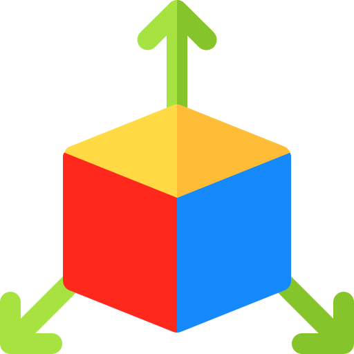

Programacion orientada a objetos
La programación Orientada a objetos se define como un paradigma de la programación, una manera de
programar específica, donde se organiza el código en unidades denominadas clases, de las cuales se
crean objetos que se relacionan entre sí para conseguir los objetivos de las aplicaciones.

Clases
Como habrás podido entender, las clases son declaraciones de objetos, también se podrían definir como
abstracciones de objetos. Esto quiere decir que la definición de un objeto es la clase. Cuando
programamos un objeto y definimos sus características y funcionalidades en realidad lo que estamos
haciendo es programar una clase. En los ejemplos anteriores en realidad hablábamos de las clases
coche o fracción porque sólo estuvimos definiendo, aunque por encima, sus formas.

Objetos
Los objetos son ejemplares de una clase cualquiera. Cuando creamos un ejemplar tenemos que
especificar la
clase a partir de la cual se creará. Esta acción de crear un objeto a partir de una clase se llama
instanciar (que viene de una mala traducción de la palabra instace que en inglés significa
ejemplar).
Por ejemplo, un objeto de la clase fracción es por ejemplo 3/5. El concepto o definición de fracción
sería la clase, pero cuando ya estamos hablando de una fracción en concreto 4/7, 8/1000 o cualquier
otra, la llamamos objeto.
